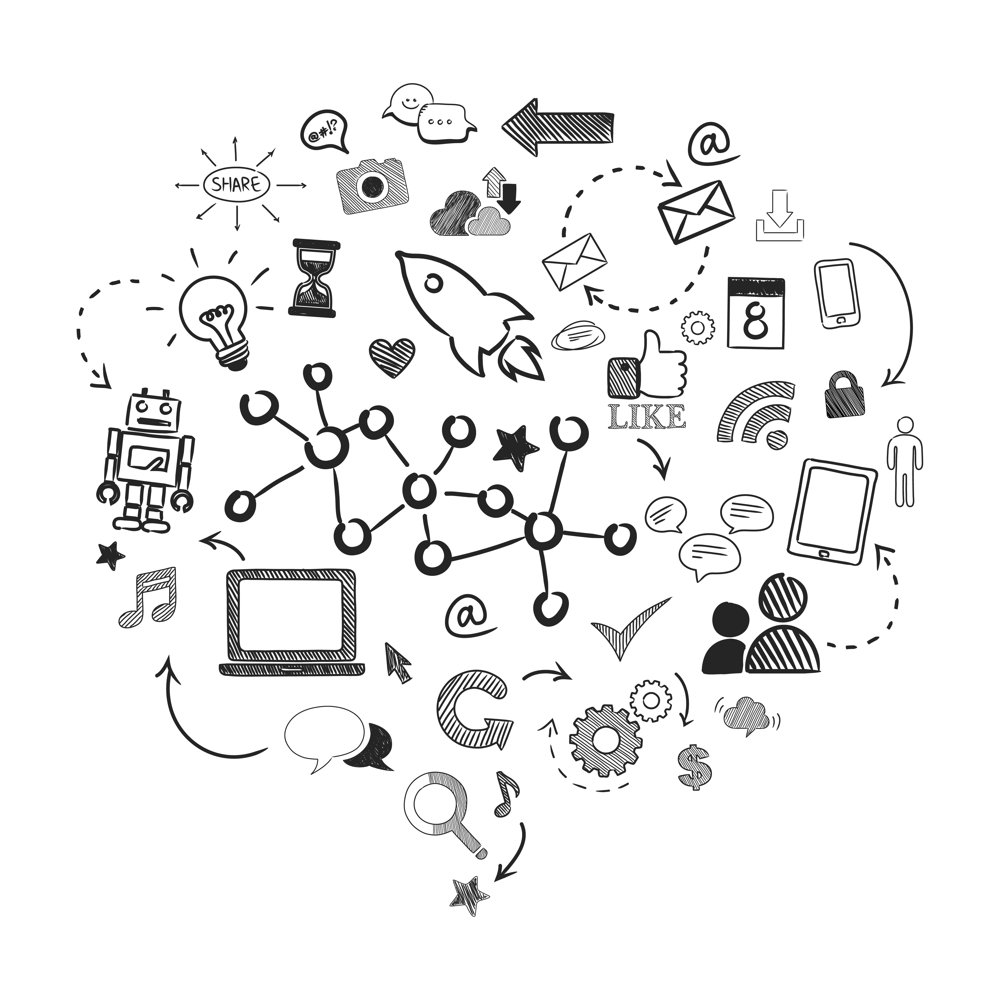

The Global Tech Conference 2025 is the premier event for technology enthuasiasts, industry leaders, & innovators from around the world. This year, we bring together experts in artificial intelligence, cybersecurity, blockchain, cloud computing, & more. Attendees will have the opportunity to engage in insightful panel discussions, hands-on workshops, and networking sessions with top professionals. Whether you are are a startup founder, a seasoned developer, or a technology enthuasiasts, this conference provides an excellent platform to learn, connect, & explore the latest trends shaping the future of technology. Don't miss the chance to gain valuable insights, discover groundbreaking solutions, & be a part of the revolution that will define the next era of innovation.
Why Attend?
"Gaining insights from top experts in the tech industry" refers to obtaining knowledge, opinions, and advice from leading figures or professionals who are recognized as authorities in technology. These experts typically have extensive experience, innovation, and success in various tech fields such as software development, cybersecurity, AI, data science, hardware engineering, and more.
"Participating in hands-on workshops and interactive sessions" means actively engaging in practical learning experiences, where you apply concepts in real-time rather than just passively consuming information. These activities typically involve direct interaction, problem-solving, and collaboration with others, making the learning process more dynamic and effective.
"Networking with professionals and expanding your business opportunities" refers to the process of building relationships with others in your industry to create potential business prospects, collaborations, or growth opportunities. By connecting with other professionals, you can exchange ideas, share expertise, and open doors to new ventures, partnerships, or clients.

"Experience the latest innovations in technology" means engaging with the newest and most cutting-edge developments in the tech world. This could involve interacting with or learning about the latest devices, software, tools, and systems that push the boundaries of what's possible in fields like AI, robotics, virtual reality, blockchain, biotechnology, and more.